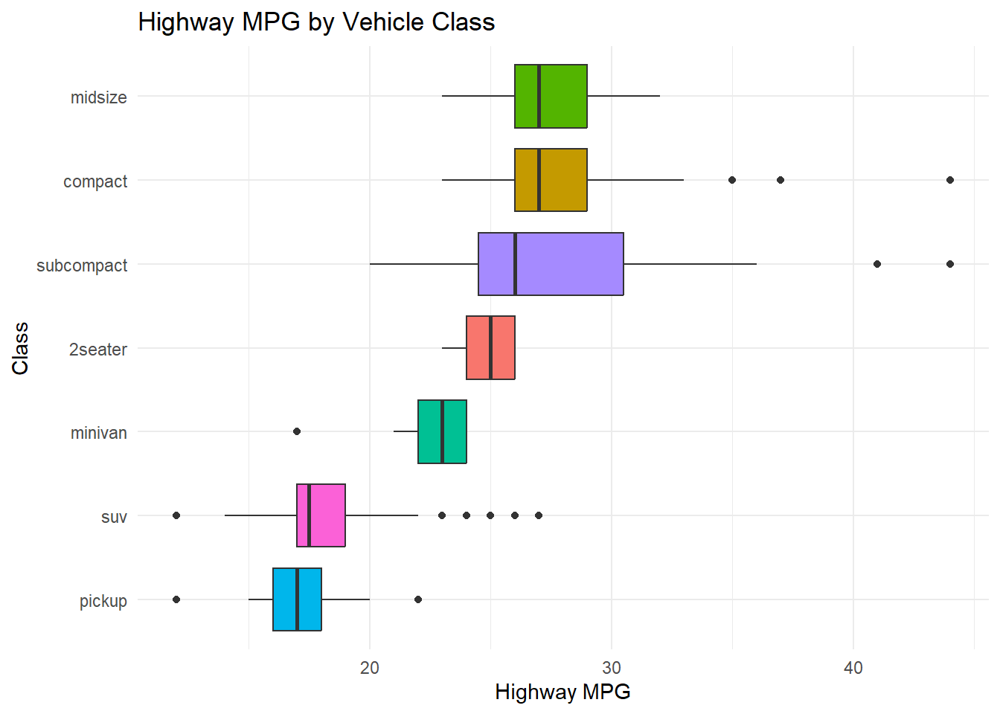
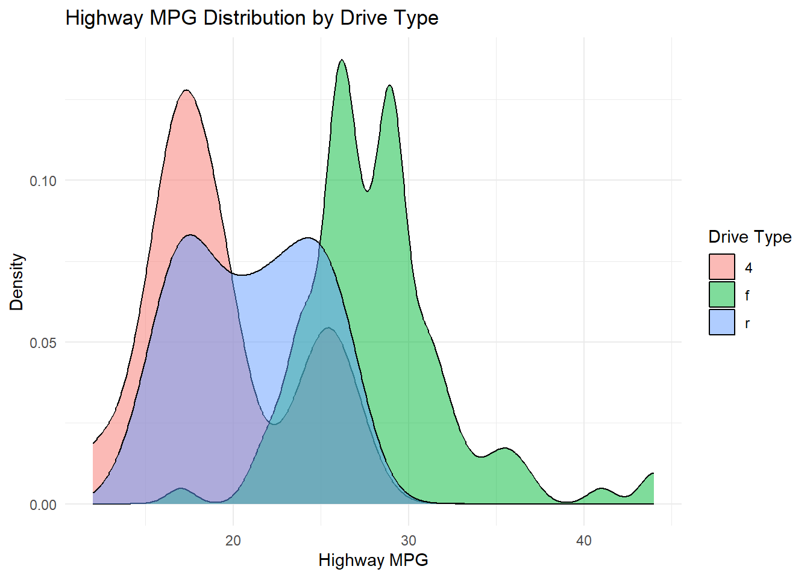
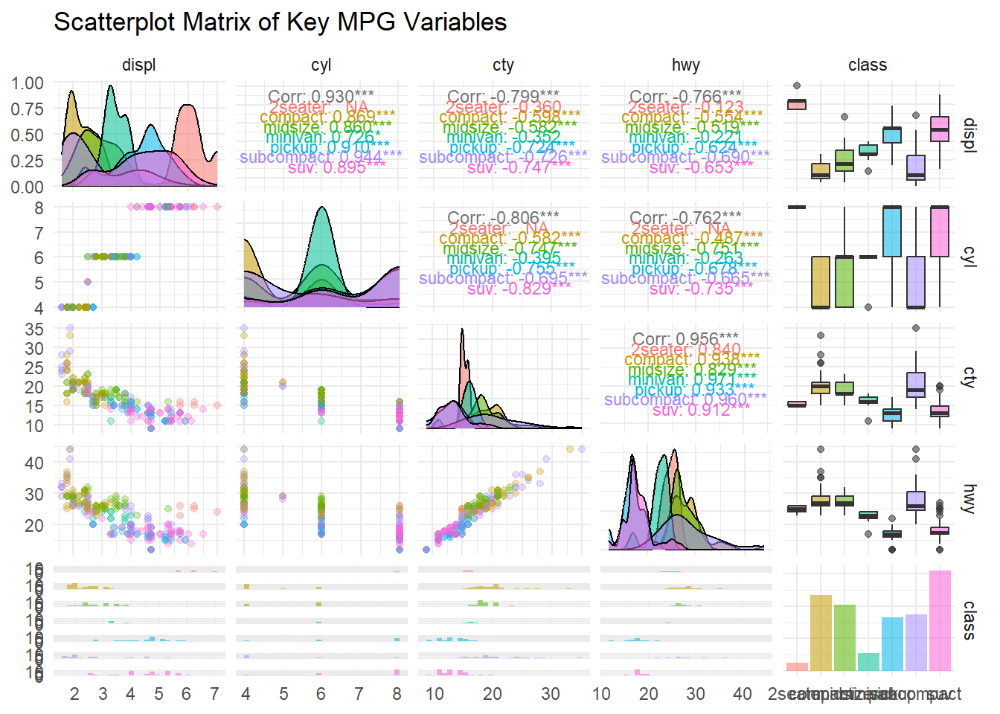

This week we move beyond single-variable summaries into bivariate (two variables) and multivariate (three or more variables) analysis. Understanding relationships between variables is the foundation of data-driven insight and predictive modeling.
By the end of this week you should be able to:
Compute and interpret correlation coefficients
Visualize relationships between two continuous variables
# Correlation test with p-valuecor.test(mpg$displ, mpg$hwy)
Pearson's product-moment correlation
data: mpg$displ and mpg$hwy
t = -18.151, df = 232, p-value < 2.2e-16
alternative hypothesis: true correlation is not equal to 0
95 percent confidence interval:
-0.8142727 -0.7072539
sample estimates:
cor
-0.76602
Interpretation: A negative correlation confirms that larger engines tend to have worse fuel efficiency. A p-value below 0.05 indicates this relationship is statistically significant.
Caution: Correlation measures linear association only. Always pair it with a scatter plot — two variables can have a strong non-linear relationship but a near-zero Pearson r.
3. Continuous vs. Categorical
3.1 Grouped Boxplot
ggplot(mpg, aes(x =reorder(class, hwy, median), y = hwy, fill = class)) +geom_boxplot(show.legend =FALSE) +coord_flip() +labs(title ="Highway MPG by Vehicle Class",x ="Class",y ="Highway MPG" ) +theme_minimal()

3.2 Grouped Density Plot
ggplot(mpg, aes(x = hwy, fill = drv)) +geom_density(alpha =0.5) +labs(title ="Highway MPG Distribution by Drive Type",x ="Highway MPG",y ="Density",fill ="Drive Type" ) +theme_minimal()

3.3 Violin Plot
A violin plot combines a boxplot with a density estimate to show the full distribution shape.
ggplot(mpg, aes(x = drv, y = hwy, fill = drv)) +geom_violin(trim =FALSE, show.legend =FALSE) +geom_boxplot(width =0.1, fill ="white", show.legend =FALSE) +labs(title ="Highway MPG by Drive Type (Violin + Boxplot)",x ="Drive Type",y ="Highway MPG" ) +theme_minimal()
Warning: There was 1 warning in `summarise()`.
ℹ In argument: `text = text_fn(.data$x, .data$y)`.
ℹ In group 4: `color = 2seater`.
Caused by warning in `cor()`:
! the standard deviation is zero
There was 1 warning in `summarise()`.
ℹ In argument: `text = text_fn(.data$x, .data$y)`.
ℹ In group 4: `color = 2seater`.
Caused by warning in `cor()`:
! the standard deviation is zero
There was 1 warning in `summarise()`.
ℹ In argument: `text = text_fn(.data$x, .data$y)`.
ℹ In group 4: `color = 2seater`.
Caused by warning in `cor()`:
! the standard deviation is zero
`stat_bin()` using `bins = 30`. Pick better value `binwidth`.
`stat_bin()` using `bins = 30`. Pick better value `binwidth`.
`stat_bin()` using `bins = 30`. Pick better value `binwidth`.
`stat_bin()` using `bins = 30`. Pick better value `binwidth`.

7. Summary Table
Relationship Type
Visualization
Statistic
Continuous–Continuous
Scatter + smooth line
Pearson r
Continuous–Categorical
Boxplot, Violin, Density
Group means / medians
Categorical–Categorical
Stacked/grouped bar
Contingency table
Multi-variable
Facets, color+size, GGally scatterplot matrix
Correlation matrix
Key Takeaways
Always visualize relationships before computing statistics.
Pearson r only captures linear relationships — check with a scatter plot.
Boxplots and violin plots are powerful for comparing a numeric variable across groups.
Use proportional bar charts (position = "fill") when comparing categorical distributions of unequal group sizes.
Correlation matrices and scatterplot matrices (ggpairs) are efficient for exploring many variables at once.
Facets are your best tool for adding a third variable to a bivariate plot without cluttering it.